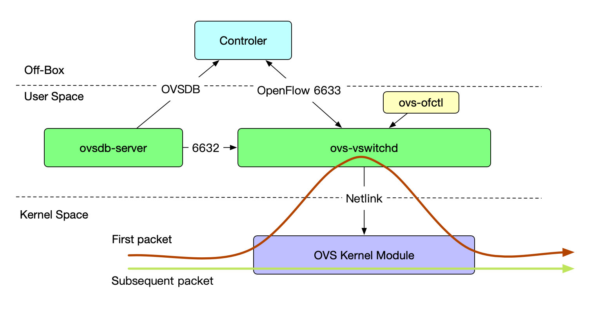
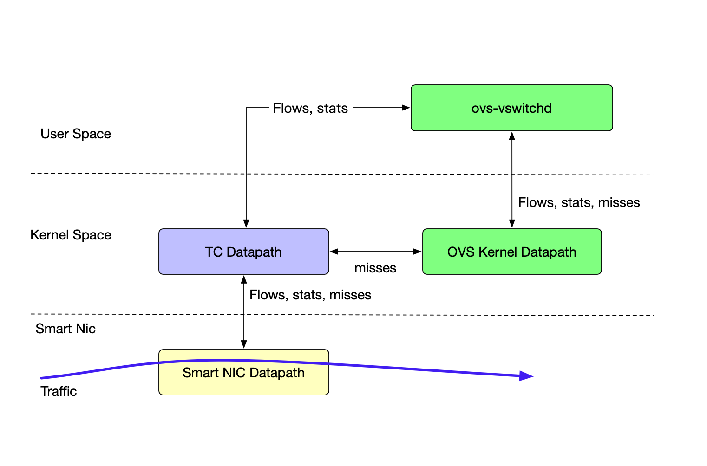

Understanding OpenVswitch Hardware Loading
This article will focus on the usage of hardware offloading in openvswitch. Our journey will start from the basic concept of openvswitch to the hardware offloading datapath. The driver we use is mlx5_core.
Basic Concept of OpenVswitch
Before talking about hardware offloading, we will review some basic components in the openvswitch world.
ovs-vswitchd
A daemon that manages and controls any number of Open vSwitch switches on the local machine. (From Official Doc ovs-vswitchd)
ovs-vswitchd is the main program that manages openvswitch. It will retrieve the ovs configuration from the database through the ovsdb-server at the startup. It can also connect to an external OpenFlow controller and receive rules from the controller. We could also use ovs-ofctl to manually set up OpenFlow rules on the CLI.
ovsdb-server
The ovsdb-server is a program that provides RPC interfaces to one or more ovs database, which means we could run as many as the ovs instance in one host as long as the ovs-vswitchd supports.
Since ovsdb-server is only an external interface for the OVSDB, then what are the things that actually store in the OVSDB?
Here’re the things store in the OVSDB:
- bridges, interfaces, tunnel info
- OVSDB and OpenFlow controller addresses
Since the data of OVSDB are stored in disk, so the ovs will still be configured as before even after a reboot.
ovs kernel module(datapath)
To run the kernel datapath, we need an ovs kernel datapath, which achieves the forwarding function in the kernel. It is a kernel module shipped with the upstream kernel.
Common Forwarding Datapath(kernel) of OpenVswitch

As you can see from the above diagram, when the first packet comes in, there’s no cache for the packet to use. So the ovs kernel datapath has to send the packet to the userspace ovs-vswitchd to decide how to deal with it. After the first packet got forwarded, the kernel datapath will use the cache rule to deal with the subsequent packets, which achieves fast-forwarding.
The OpenFlow rules of ovs-vswtichd are from the cli tool ovs-ofctl or from the controller via the OpenFlow protocol session on TCP 6633.
The controller may also provide the configuration of the ovs to the ovsdb-server who will provide the configuration to ovs-vswitchd via TCP 6632.
Hardware Offloading Datapath
Now comes the hardware offloading datapath.
We’ve already known that the kernel datapath is using the OpenFlow rule pattern to forward the packet, which is also called match-action forwarding. In a match-action forwarding, we will have some keys to match and some actions to do after matching.
The same match-action mechanism also exist on the tc flower
TC Flower
The TC Flower Classifier allows control of packets based on flows determined by matching of well-known packet fields and metadata.[0]
The Linux Traffic Control (TC) subsystem helps in policing, classifying, shaping, and scheduling network traffic. TC also mangles the packet content during classification by using filters and actions. [1]
In a word, TC is a classifier that we can use to control the traffic incoming. And the TC flower rules that describe the classifier and also can be used by other places, like the NIC driver’s smart system.
Also, the TC flower has its kernel datapath which is very similar to the ovs kernel datapath. The TC datapath can also forward the traffic based on the policies/rules configured.
Hardware Offloading
In the kernel datapath, we have a kernel module to process the packets, but it will still take the packets a long walk from the nic interface to the kernel module.
We want it faster.
The fastest way to process a packet is to deal with the packet inside the NIC, which avoids the heavy kernel process. When we process the traffic in this fastest way, we offloaded the traffic from the kernel to the NIC hardware, which is why this technology is called hardware offloading.
So to use the hardware offloading tech, we must use a NIC that supports it(like NFP and MLX).
TC Flower usage in Hardware Offloading
Now we know what’s the fastest way to process the traffic and also the hardware we need to use. How to communicate with the hardware is one problem that we must solve. We cannot speak an individual language for every different NIC vendor. The vendors also want something off the shelf. TC Flower in this case will be the solution. TC flower has its policy and rules pattern and you can decide if you want to implement the rules inside the nic. The nic vendor will have their nic system to understand the TC flower rules and process the packets based on the rules.

From the above diagram, you can tell that the first packet of the traffic will be processed by the userspace ovs-vswitchd program because there are no cache flow rules in the Smart NIC datapath. So it will send the packets to kernel space’s TC datapath. If the TC datapath has rules configured, the packet will use the rules to forward, if not, the TC datapath will ask the OVS kernel datapath if there are any rules related to this packet. If the OVS kernel datapath still has no idea, it will send the packet to the user space program ovs-vswitchd. ovs-vswitchd will have a controller or local configured rules to match the packet. If ovs-vswitchd found anything, it will send back to ovs-kernel datapath and TC datapath.
Here’s one thing we need to note: ovs-vswitchd can only read OpenFlow protocol rules from controller and cli. After receiving the rules, it will translate the OpenFlow rules to TC rules and send them to TC Datapath, which is basically how ovs configured the TC Flower and use the hardware offloading feature.